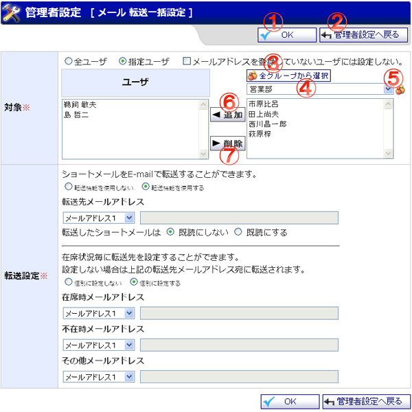

ショートメールの転送設定を一括で行う画面です。

機能説明
OKボタンメール転送一括設定確認画面へ遷移します。 |
管理者設定へ戻るボタン管理者設定画面へ遷移します。 |
|---|---|
全グループから選択ボタンポップアップで全グループから選択画面が開きます。 |
グループコンボグループの一覧が表示されます。 |
グループボタンポップアップでグループ選択画面が開きます。 |
追加ボタン選択したグループに所属するユーザを、対象ユーザに追加します。 |
削除ボタン選択したユーザを対象ユーザから削除します。 |
表示・入力項目説明
対象
ショートメール一括設定の対象者を選択します。
転送設定
ショートメール 転送機能の使用の有無、ショートメールをE-mailで転送する際の転送先を設定します。